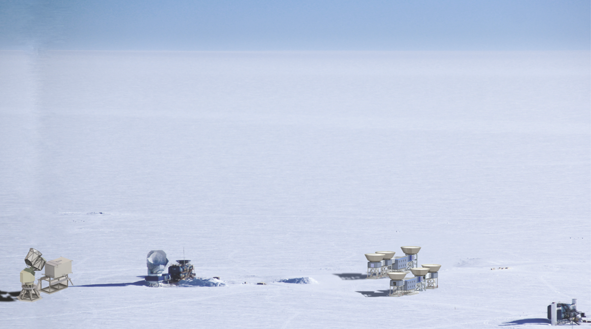
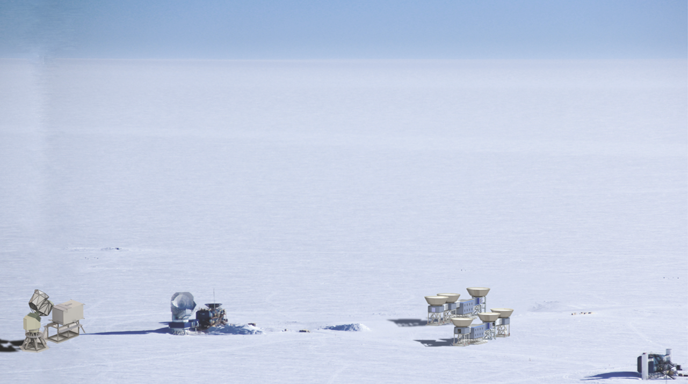

CMB Stage 4
CMB Stage 4 (CMB-S4) is a future ground-based mm-wave observatory that will search for gravitational waves from cosmic inflation, test for the presence of new light relativistic particles in the early universe, measure the total mass in the neutrino sector, constrain a variety of dark matter and dark energy models, map matter throughout the cosmos using gravitational lensing of the CMB, and conduct a unique wide-field time-domain survey in the millimeter band. CMB-S4 is currently in the design stage, with anticipated joint funding from the DOE and NSF. It is the highest-ranked new project recommended by the decadal survey of US particle physics by the Particle Physics Project Prioritization Panel as well as the decadal survey of US astronomy and astrophysics by the National Academies of Engineering, Science, and Medicine. When constructed, it will observe the CMB at wavelengths from 20 GHz to 300 GHz with ~500,000 detectors across a combination of large-aperture (~6 meter) and small-aperture (~0.5 meter) telescopes.
 

CAD renderings of one possible configuration of CMB-S4 with telescopes in the Chilean Atacama desert (left) and at the geographic South Pole (right)
My work on CMB-S4 centers on the design of its small-aperture telescopes, which will provide ultra-deep maps of ~5% of the sky with sensitivity to degree-scale polarization anisotropies of the CMB in order to search for signatures of cosmic inflation. Eventually, we will integrate and test many of the small aperture telescopes at LBNL before shipping them to remote millimeter-wave observing sites at high elevation.
Learn more about the observatory through the following link: